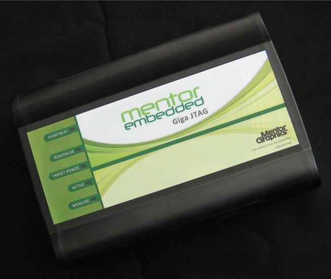

Sourcery Probe Professional Models
The Sourcery Probe Professional is powered by an external power supply, and communicates to the host computer via Ethernet. The debug cable is connected to a probe tip, whose debug connector conforms to the most common connector type for the given processor architecture. A series of adapter modules are available for alternate connector types.
Figure 1‑2. Sourcery Probe Professional
Refer to the Mentor Embedded Sourcery Probe Professional Hardware Manual for instructions on:
- Connecting the Sourcery Probe Professional to your network
- Connecting the Sourcery Probe Professional to the target debug connector
- Accessing the probe console via the virtual serial port
For information on setting up your software, refer to the Sourcery CodeBench Getting Started Guide.